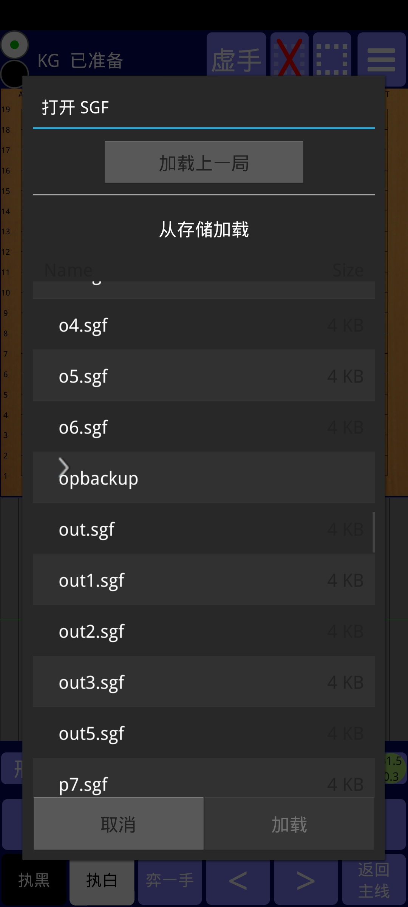
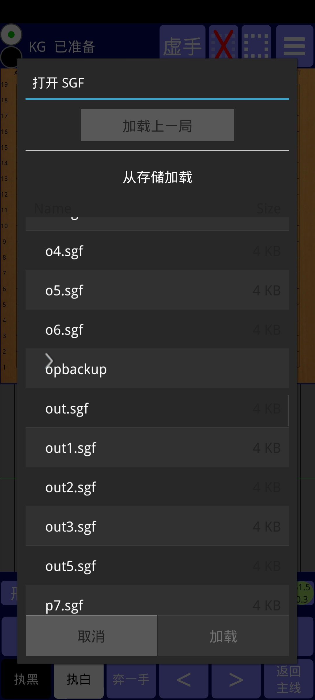

此应用使得你可以与俩个非常强的围棋 AI 进行对弈，也可以用他们来分析:
1) KataGo: 据我所知本应用是第一个 KataGo 的安卓单机实现。 内置（扩展训练的最后一个）10b网络和（来自KG1.5.0的）20b网络，也可以自己加载其他网络。10b网络运行在CPU上。20b网络专为安卓进行了优化，如果可能也会使用硬件加速。以骁龙888处理器为例，10b的速度约是100n/s，20b是160n/s.
2) LeelaZero: 内置（与40b自我对弈网络进行了对抗训练的）15b网络和（LZ第287号）40b网络，也可以自己加载其他网络。这俩网络都专为安卓进行了优化，在近期的骁龙晶片组上能够使用硬件加速，速度相当快。以骁龙888为例，15b的速度是320n/s，40b是140n/s，比运行在CPU上约15倍快。
本应用可从 谷歌应用商店下载，或者从 Github 下载：64位点这里 （请在手机的设置里允许安装第三方来源的应用），如果64位的不兼容，32位点这里，下载后安装即可使用。
 

界面修改自 Alexander Taylor 的杰出应用“LazyBaduk”（感谢他友好的许可）。界面的操作绝大多数不言自明，但一些提示也许很有帮助：
左上角两个圆圈指示当前该谁落子，可以点击改变。
点击虚线框弹出一个对话框，你可以设置限制在局部的分析深度、矩形外的若干点的坐标。对话框设置完成后在棋盘上框选一个矩形。点击红叉可以恢复原状。
右上角是设置按钮，你可以切换网络、引擎，更改一些设置。
设置里首先显示的是当前使用的网络的名称，LeelaZero或KataGo，点击弹出一个对话框，可管理网络：你可以删除你不想用的内置的网络，也可以从存储加载。为了避免重复，加载的网络不会复制到本应用里面，而是从加载的位置读取，所以如果删除了网络或者更改了网络的位置，将不可用。对于KataGo，可以加载标准的或优化的网络，对于LeelaZero，则只可加载优化的网络。
如果当前使用的是 KataGo，设置里的“等级”将可用：输入"30"至"-8"的整数（表示30级至9段（网棋）），经过强度大致校准的机器人（就像 KaTrain 中一样）将成为 AI 选手（而不是 KataGo 完全体）。这些弱化的机器人完全归功于 sanderland 出色的 KaTrain 项目的基础算法。必须用20b或15b的网络，校准的强度才准确。算法所限，4段以上强度增加不多，所以"-8"实际上比9段弱得多。选择“开局库”，AI 选手将使用人类的布局。
如果输入的不是30至-8的整数，AI 选手将是 KataGo 完全体。无论输入什么，分析(“分析”或“全部分析”)永远都是完全体。
选项“对弈时赢率”，可以切换对弈过程中是否显示赢率（而不仅仅是在分析中）。如果勾选，将显示所有 AI 回合的赢率（上面提到的校准机器人不计算赢率，所以不显示，落后太多时也不会认输）。
在“直方图”中，有三种图可选：
在“分析时每手总模拟对局数”中输入正数，则分析时每手进行这么多的计算。否则每手消耗“秒/手”中指定的秒数。
如果你按住棋盘不松手，将显示落子的预览。滑动手指来调整落子位置（位于手指上方 3 行）。抬起手指表示落子。可以在设置中关闭 3 行偏移。
如果在现有的棋子上落子，通常什么都不会发生。但是，如果加载了没有手顺的棋谱文件，则将删除现有棋子（这可用于编辑想要分析的盘面）。
棋盘下方的区域显示了一个赢率直方图。直方图的柱数与对弈或加载棋谱的手数相同。点击一个柱，可以导航到相应的着手（盘面）。当前盘面由红色三角形指明。如果 AI 对盘面进行了分析，则灰色的柱变为黑白相间，黑白的长短表示赢率大小。
直方图总是显示一条分支的赢率（只是应用界面没地方显示所有分支的赢率）。如果您加载了 sgf（通过加载按钮或从另一个应用程序分享到 BadukAI 的 sgf 棋谱文件），将显示棋谱的主分支。然后，如果您自己或者让 AI 行棋，添加了变化分支，直方图将显示从开局到分支变化最后一手的赢率。要跳转至分支变化的前一手并返回棋谱的主分支，请点击“返回主线”。
即使只显示一个分支的赢率直方图，按钮“保存 SGF”将保存所有的分支。（注意保存时自己写上后缀名".sgf"，否则什么也不会发生）
当 AI 分析一个盘面时，最佳选点（至多五个）会按照质量顺序出现在赢率直方图下方。点击可在棋盘上查看最佳选点的后续变化。其中第一个按钮“形势”，表示 AI 的形势预测。
点击“分析”，AI 将分析当前盘面：赢率、目差、最佳着法及其后续变化信息将不断更新，直到您再次点击“分析”才会停止。
点击“全部分析”，AI 将从当前盘面到终局一着一手地分析（每次分析受限于设置中的“秒/手”或“分析时每手总模拟对局数”）。之后，直方图将显示所有赢率，以便您可以观察到赢率的突然变化（这暗示着恶手），然后仔细审视相应盘面。
要玩让子棋，你可以放置一个黑棋棋子、虚手、再放置一个黑子，再虚手······直到放置完毕，然后点击“执白”，意思是让 AI 拿白棋。
对于 KataGo，你可以
对于 LeelaZero，你可以
如果您遇到任何问题，请告诉我...
我的邮件地址：Andreas Kirmse